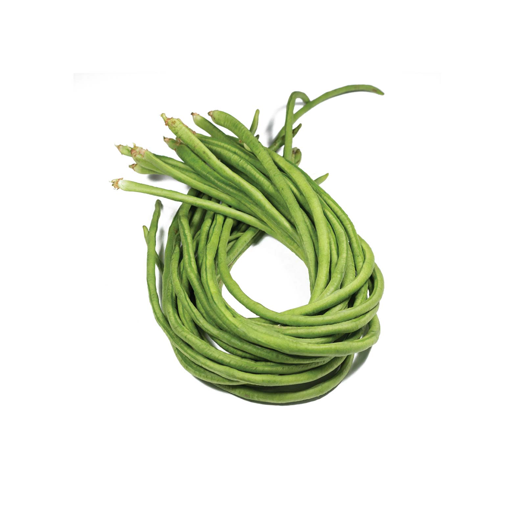

S1 Reference
English baseline
The original setting. Every agent-visible surface stays in English.
- Dialogue
- English
- Tool schemas
- English
- Policies & database
- English
Meet SeaTauBench — a benchmark for tool–agent–user interaction in five Southeast Asian and regional languages. Go beyond English to measure how well agents act, and how reliably they succeed.
Built on τ²-Bench. Grounded in real service tasks.

Compare task success and repeated-run reliability, one setting at a time.
We couldn’t load the benchmark results. You can still read the paper below.
Localized dialogue, tools, policies, and databases.
Loading paper results…
Loading paper results…
Loading the benchmark…
| Rank | Model | Result cells |
|---|
Macro average of matching result cells. Each domain × language × scenario has equal weight. Scores use the paper’s rounded values; “—” means not reported.
| Model | Task domain | Language | Scenario | pass@1 | pass² | pass³ | ρ³ | Source |
|---|
Manuscript snapshot · Appendix G, Tables 17–21. Public paper ↗168 reported result cells · 3 trials per task
Change the language of one surface. See where performance changes.
The original setting. Every agent-visible surface stays in English.
Can the agent serve a user who speaks a different language?
Can the agent use tools when their schemas are localized?
The full test: dialogue, tools, and domain context in the target language.
S2 and S3 isolate different surfaces; S3 does not build on S2. Tool execution and scoring stay canonical across all four settings. Mixed-language tool results are also available in the explorer.
SeaTauBench evaluates whether an agent reaches the correct final state, then checks whether it can repeat that success over three trials.
Read the evaluation protocol ↗Mean success rate across independent trials. Does the agent complete the task?
The share of tasks that succeed in all three trials. Can the agent get it right every time?
pass³ divided by pass@1 for each result cell. Measures repeatability relative to success; a high value alone does not imply high task quality.
SEACrowd · AI Singapore · Nanyang Technological University · SCB DataX · Chulalongkorn University · VISTEC · University of Indonesia · Cohere
@misc{nguyen2026seataubench,
title = {SEATauBench: Progressively Adapting Tool-Agent-User
Evaluation Into Low-Resource Southeast Asian Languages},
author = {Nguyen, My Chiffon and Adila, Aulia and
Ruangtanusak, Saksorn and Leesombatwathana, Kittiphat and
Lim, Vissuta Gunawan and Payoungkhamdee, Patomporn and
Cahyawijaya, Samuel},
year = {2026},
howpublished = {Manuscript},
url = {https://github.com/SEACrowd/SEATauBench}
}